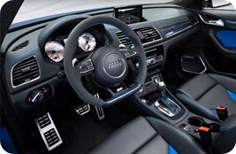

الاستماع Q3


بل هو مفهوم السيارة مع السائل فضة لون الجسم، وعجلات 20 بوصة، سقف قابلة للطي النسيج، وغطاء محرك السيارة التي تسيطر عليها كهربائيا، 4 أسطوانات محرك 2.0 TDI تصنيف 204 حصانا (150 كيلوواط؛ 201 حصان)
و 400 نيوتن متر (295.02 باوند · قدم)، الديزل جسيمات مرشح وبلوتك نظام التحكم في الانبعاثات، كواترو دائم نظام الدفع الرباعي مع HALDEX القابض،
أودي S ترونيك علبة التروس ذات القابض المزدوج، ماكفرسون-تبختر المحور الأمامي والمحور الخلفي أربعة الارتباط، أودي محرك أقراص النظام SELECT مع 3 طرق (الديناميكية، والرياضة، والكفاءة)،
MMI لوحة التحكم مع لوحة اللمس والرؤية المزدوجة والتكنولوجيا، ونظام الصوت مع مكبرات الصوت تمديد بارز.